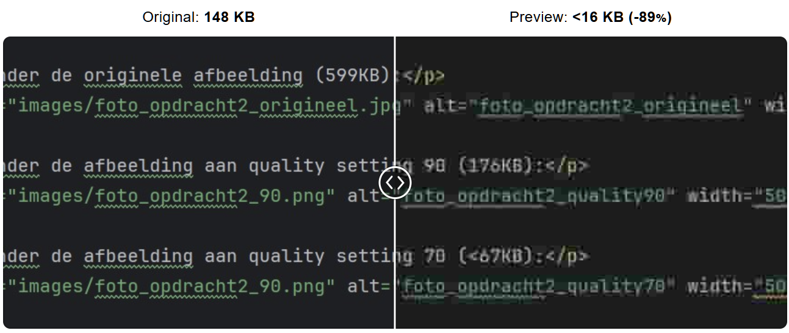

Hieronder de originele afbeelding (599KB):
Hieronder de afbeelding aan quality setting 90 (176KB):
Hieronder de afbeelding aan quality setting 70 (<67KB):
Hieronder de afbeelding aan quality setting 40 (<41KB):
Op de webpagina is het niet zo goed te zien, maar ik zie vooral een groot kwaliteitsverlies tussen 90 en 40, de foto wordt waziger.
Als ik hetzelfde doe met een foto van mijn code hier, zie ik dat de tekst erg wazig wordt en de achtergrond (en andere kleuren) donkerder (hier heb ik een afbeelding met setting 10 als kwaliteit gezet om de afbeelding duidelijker weer te geven).
